<meta charset="utf-8">
<meta name="viewport" content="width=device-width, initial-scale=1">
<meta name="robots" content="noindex">
<title>Quintanilla: Monterrey 1596</title>
<link rel="stylesheet" href="style.css">

<nav>
  <a href="index.html">Home</a>
  <a class="here" href="quintanilla.html">Quintanilla</a>
  <a href="martinez.html">Martinez</a>
  <a href="flynn.html">Flynn</a>
  <a href="maccoll.html">MacColl</a>
</nav>

<main>
<h1>Quintanilla</h1>
<p class="sub">My mother's father's line. Eleven generations, from a man buried by charity in Monterrey in 1672 to my mother in San Antonio. This is the story in plain English, with the actual records underneath it.</p>

<h2>Read this first</h2>

<p>Nearly every family has a story about where it came from, and nearly every one of those stories has something wrong with it. Ours did. So the rule on this page is simple: <strong>I only claim what a document says</strong>, and where I'm guessing, I say I'm guessing.</p>

<p>Three labels do that work:</p>

<ul>
  <li><span class="badge proven">Proven</span> means I have looked at the actual record, or at a properly published summary of it, and it says what I say it says.</li>
  <li><span class="badge probable">Probable</span> means everything points that way but the one document that would settle it hasn't been read yet.</li>
  <li><span class="badge lore">Family story</span> means that's what got passed down, and it hasn't been tested — or it's been tested and it's wrong, in which case I say so.</li>
</ul>

<p>Where I got something wrong earlier and later found out, I've left the mistake on the page. Those are the interesting parts.</p>

<h2>The whole line on one screen</h2>

<p>Here is the ladder, top to bottom. Every rung except the very top one is <span class="badge proven">Proven</span> on a document.</p>

<ol>
  <li><strong>Bartolomé González</strong>, born in Spain about 1600 in a town called Morón. Died Monterrey, February 1672.</li>
  <li>His son <strong>Bartolomé González de Quintanilla</strong>, born about 1654, died 11 November 1713. A cattle rancher, a militia standard-bearer, and for a while a magistrate.</li>
  <li>His son <strong>Antonio</strong>, baptised 20 October 1684. Married three times.</li>
  <li>His son <strong>Francisco Miguel</strong>, baptised 14 October 1731.</li>
  <li>His son <strong>José Antonio Encarnación</strong>, born 26 March 1767.</li>
  <li>His son <strong>Dámaso</strong>, baptised 15 December 1813 in a town called China, in Nuevo León.</li>
  <li>His son <strong>Inocencio</strong>, baptised 1853, died in Reynosa on 14 January 1924.</li>
  <li>His son <strong>Héctor Hermenegildo Quintanilla</strong>, born about 1893 in Matamoros, Mexico. A telegraph operator. Died in San Antonio, 25 September 1985.</li>
  <li>His son <strong>Manuel</strong>, born Monterrey 28 May 1925. An optician. Died San Antonio, 23 October 1992.</li>
  <li>His daughter <strong>Eleanor</strong>.</li>
  <li>Me.</li>
</ol>

<p>That's roughly 400 years and one border crossing. The rest of this page is what happened in between.</p>

<hr>

<h2>Part one: a man off a boat, and a woman whose name we kept</h2>

<p>The story starts with a burial.</p>

<p>On 2 February 1672 a priest in Monterrey cathedral wrote a few lines in the deaths book about a man who had just died. He gave the man's name, said where he was from, said who his wife was, and then recorded two facts that tell you almost everything about how the man's life ended.</p>

<figure>
  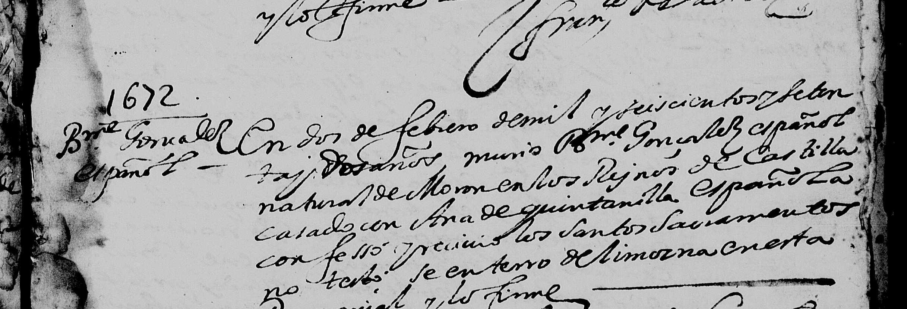
  <figcaption>Monterrey cathedral, 2 February 1672: <strong>"Bartolomé González, natural de Morón en los Reinos de Castilla, casado con Ana de Quintanilla… no testó; se enterró de limosna."</strong> Bartolomé González, a native of Morón in the kingdoms of Castile, married to Ana de Quintanilla. He left no will. He was buried on charity. <a href="documents/bartolome-gonzalez-burial-1672.jpg">Full page.</a></figcaption>
</figure>

<p>"He left no will" means he had nothing worth writing down. "Buried on charity" means the church paid for the funeral because the family couldn't.</p>

<p>That's my earliest ancestor on this side: <span class="badge proven">Proven</span> a Spanish immigrant who died broke in northern Mexico in 1672. He came from <strong>Morón de la Frontera</strong>, a hill town in the olive country southeast of Seville. Nobody has found him in the records there, and honestly nobody is likely to — "González" in a Spanish parish register around 1600 is like "Smith."</p>

<p>He was married twice. His first wife was <strong>Isabel Gómez</strong>, in a town in Jalisco called Tepatitlán; a son of that marriage left a will in 1701 that names both of them. His second wife, and my ancestor, was <strong>Ana de Quintanilla</strong>, in Monterrey.</p>

<h3>Why we are Quintanillas and not Gonzálezes</h3>

<p>Here is the thing I did not expect. <strong>Our surname came down through a woman.</strong></p>

<p>Spanish naming in the 1600s was loose. A child could take the father's surname, or the mother's, or a grandparent's, or two of them stuck together. Ana's married name in the records is González, but her own name — Quintanilla — is what her children carried. They went by "González de Quintanilla," and over about six generations the "González" quietly fell off. What was left is the name on my mother's birth certificate.</p>

<p>So the name is hers, not his.</p>

<h3>The founder question</h3>

<p>This is the biggest open question on the page, so I want to be careful with it.</p>

<p>Monterrey was founded on <strong>20 September 1596</strong>, when a dozen families rode into a valley in northern Mexico and signed a charter. It's now one of the largest cities in Mexico. Being descended from one of those twelve founders is a real, checkable thing — the Mexican equivalent of Mayflower descent, and twenty-four years earlier.</p>

<p>One of the twelve was <strong>Captain Lucas García</strong>. He is not an obscure figure. The old chronicles call him <em>El Bueno</em>, "the good one," and <em>el Capitán de la Paz</em>, "the captain of peace," because he spoke the local Huachichil language and kept the peace as the settlement's interpreter. He held town office from 1599 until about 1630. His wife was <strong>Juliana de Quintanilla</strong>, and she outlived him by nearly forty years.</p>

<p>Family trees say Ana de Quintanilla was their daughter. If that's right, my line runs into the founding of Monterrey.</p>

<p>What I can say honestly is this <span class="badge probable">Probable</span>:</p>

<ul>
  <li>The standard scholarly history of the region — a 640-page book by Eugenio del Hoyo, which has no interest whatsoever in my family — independently documents <strong>Lucas García, married to Juliana de Quintanilla, one of the founders of Monterrey</strong>. So the parent couple is real and properly sourced, not invented by a hobbyist.</li>
  <li>Ana appears in the records under <em>both</em> surnames, "Ana García" and "Ana de Quintanilla," which is exactly what a daughter of that couple would do.</li>
  <li>But <strong>no document I have read says Ana was their daughter.</strong> That link is still a family tree's word.</li>
</ul>

<p>And I know exactly which page would settle it. More on that below.</p>

<h3>Ana's own burial, and the wall behind it</h3>

<p>Ana died twelve years after her husband. Her burial entry, July 1684, is in the same cathedral book.</p>

<figure>
  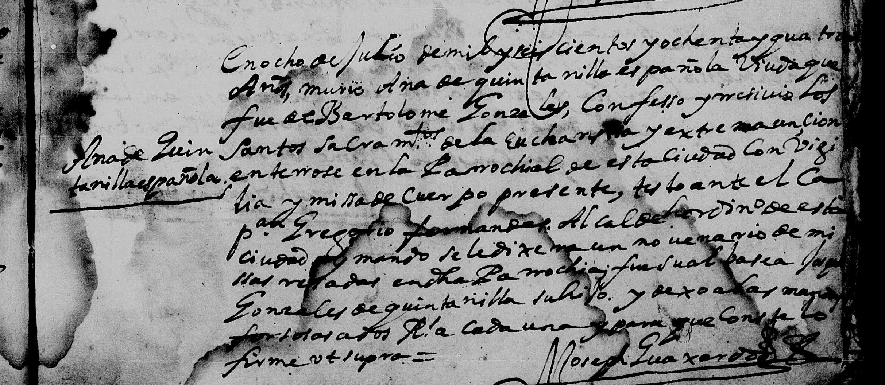
  <figcaption>Monterrey, July 1684: the widow of Bartolomé González. It records that <strong>she made a will</strong>, before Captain Gregorio Fernández, and that her son <strong>Joseph González de Quintanilla</strong> was her executor. It does not name her parents. <a href="documents/ana-quintanilla-burial-1684.jpg">Full page.</a></figcaption>
</figure>

<p>Everything that would name Ana's parents was written before the records begin. Monterrey's marriage register starts in <strong>1667</strong>; the baptism and burial registers start in <strong>1668</strong>. Ana was born around 1625, married around 1652, and had her children through the 1650s. Her baptism, her wedding and her older children's baptisms were never filmed, because they were never in a book that survived.</p>

<p>So there is exactly one route to her parents, and it isn't a church register. It's her will.</p>

<h3>Page 92</h3>

<p>Her burial entry says she made a will. Wills on this frontier weren't filed with a notary — they were made in front of the town magistrate and bound into the town's own books, which still exist in the Monterrey city archive. A Mexican historian named <strong>Israel Cavazos Garza</strong> spent decades cataloguing those books and published summaries of every single document, volume by volume.</p>

<p>Five of his six volumes are free online. The one covering <strong>1599 to 1700</strong> — the one with Ana's will in it — is print only.</p>

<p>I found it on HathiTrust, where it's scanned but locked: you cannot read it, but you <em>can</em> search inside it. So I searched it one word at a time and wrote down which pages each word landed on. Then I looked for the page where all the right words overlap.</p>

<p>Every one of these is on <strong>page 92</strong>:</p>

<ul>
  <li><em>testamento</em> (will) — once</li>
  <li><em>Quintanilla</em> — three times</li>
  <li><em>Lucas</em> — three times</li>
  <li><em>Juliana</em> — twice</li>
  <li><em>Ana</em> — twice</li>
</ul>

<p>A will, on a page that names Ana, Lucas and Juliana de Quintanilla, sitting immediately before the pages where the 1684 entries start. That is almost certainly the document that says whose daughter Ana was.</p>

<p>I have not read it. <strong>It is one page, in a book held by four American university libraries</strong>, and a photocopy request would settle a 400-year-old question. Until somebody reads it, the founder claim stays <span class="badge probable">Probable</span>, and I'm not going to pretend otherwise.</p>

<hr>

<h2>Part two: what Monterrey actually was</h2>

<p>It helps to know how small this world was.</p>

<p>Monterrey in the 1600s was not a city. It was a few dozen households in a valley with mountains on three sides, a long way from anywhere, and it kept nearly dying. It was founded three times before it stuck. In <strong>1611 and 1612 the river flooded and destroyed most of it</strong>. The colonial government in Mexico City was hundreds of miles away and mostly not paying attention.</p>

<p>Here's the number that puts it in scale: in <strong>1626</strong>, in the entire kingdom of Nuevo León, there were <strong>seven cattle estancias</strong>. Seven ranches. That was the economy.</p>

<p>The settlers lived by farming and stock-raising, and by forcing the local Indian peoples to work for them under an arrangement called a <em>congrega</em> — a legal fiction in which the Crown "entrusted" a group of Indians to a settler who was supposed to protect and Christianise them, and who in practice owned their labour. The Indians raided back. People were killed on both sides for a century.</p>

<p>That is the town my family lived in for six generations. When you read the next section and it sounds like they were doing well, hold this in mind: doing well here meant a stone house with three rooms and enough sheep to matter.</p>

<hr>

<h2>Part three: the son who made good, and the will that proved everything</h2>

<p>Ana and Bartolomé's son — also Bartolomé, born about 1654 — is the best-documented person in the colonial half of this family, and closing his link to his parents took the longest.</p>

<h3>The wedding, 1672</h3>

<p>Six weeks before his father died, he got married.</p>

<figure>
  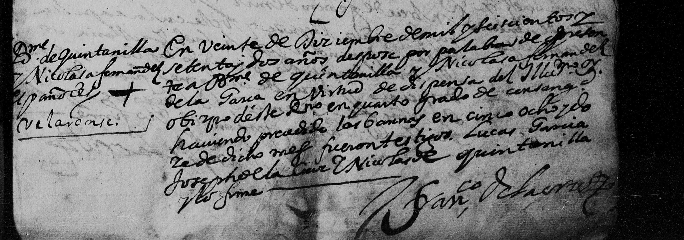
  <figcaption>Monterrey cathedral, 20 December 1672: Bartolomé González de Quintanilla marries <strong>Nicolasa Fernández</strong>. Two of the witnesses are <strong>Lucas García</strong> and <strong>Nicolás de Quintanilla</strong>. <a href="documents/quintanilla-tijerina-marriage-1672.jpg">Full page.</a></figcaption>
</figure>

<p>The bride and groom were <strong>fourth-degree cousins</strong> — roughly third cousins — which the Catholic Church did not allow without written permission. They got the permission. That tells you something on its own: in a town this small, everyone marriageable was already related to you.</p>

<p>The entry does <em>not</em> name the groom's parents. That one omission is why the top of this line stayed unproven for years.</p>

<h3>What he actually did for a living</h3>

<p>Once I got into the town's notarial books, he stopped being a name and became a person. In his own words, in a power of attorney from February 1711, he was a <strong>"criador de ganados y caballada y labrador"</strong> — a breeder of cattle and horses, and a farmer.</p>

<p>Here's what else those books say:</p>

<ul>
  <li><strong>Where the family lived.</strong> In December 1709 he leased a place called <strong>las Hediondas</strong>, on the Pesquería Grande river, from the Jesuits — 35 <em>sitios</em> of grazing land, 60 pesos a year, for nine years. The document says it is the place <strong>"where the said royal standard-bearer currently lives."</strong> That's his house.</li>
  <li><strong>A town house too.</strong> February 1706, 200 pesos, on the Calle Real, the road out toward Saltillo. He bought it in front of his own brother-in-law, who was sitting as magistrate that day.</li>
  <li><strong>Sheep on shares.</strong> June 1711, he took a lease on <strong>300 breeding ewes</strong> from a neighbour. The rent was paid in animals: ten yearling rams a year for every hundred ewes.</li>
  <li><strong>No excuses allowed.</strong> He witnessed a similar livestock contract with a clause listing what the tenant could <em>not</em> claim relief for: <em>seca, fuego, piedra, esterilidad</em> — drought, fire, hail, barrenness. That's the risk of the business, itemised.</li>
  <li><strong>He held office.</strong> On 3 January 1708 a deed was taken in front of him because he was holding "the magistrate's staff in deposit" — standing in as judge. His formal rank was <em>alférez real</em>, royal standard-bearer, the man who carried the king's flag for the town militia.</li>
</ul>

<p>So: a rancher, a landlord's tenant, a moneyed-enough man in a poor place, and part of the small group who ran it.</p>

<h3>José and Isabel</h3>

<p>He also owned people.</p>

<p>On <strong>26 June 1712</strong>, he bought a married couple named <strong>José and Isabel</strong> from the Jesuit college of San Luis Potosí. The price was 500 pesos, paid in cash. The wording of the sale is unambiguous: they were <em>"sujetos a servidumbre perpetua ellos y los hijos e hijas que procrearen"</em> — subject to perpetual servitude, they and any sons and daughters they might have.</p>

<p>He was the senior militia officer of the city when he did it. The Jesuits were the sellers. Three and a half months later he made his will.</p>

<p>I'm not going to soften that, and I'm not going to bury it in a footnote either. It's one of the few things about this man's inner life we can actually observe, and it isn't good.</p>

<p>There is more of the same. In <strong>1711</strong> there were three lawsuits in the Monterrey civil court over the ownership of Indians. One of them was <strong>against him</strong>. Another names a José de Quintanilla. That's the year before he bought José and Isabel.</p>

<h3>The will, October 1712 — the document that closed the whole line</h3>

<p>For a long time I thought the top of this family was unprovable. The reasoning went: he was born around 1654, the church registers only start in 1667/68, so his baptism doesn't exist, so nothing will ever name his parents.</p>

<p>That was right about the registers and wrong as a conclusion. <strong>I had only searched one kind of record.</strong> Wills weren't in the church books. They were in the town's books. And his is there.</p>

<blockquote>
<p><strong>Monterrey, 14 October 1712.</strong> The will of Captain Bartolomé González de Quintanilla, <em>"hijo legítimo del capitán Bartolomé González y de doña Ana de Quintanilla, difuntos"</em> — legitimate son of Captain Bartolomé González and Doña Ana de Quintanilla, deceased.</p>
<p>It names his wife Nicolasa Fernández. It names his sons Bartolomé, Francisco and Antonio, <em>"viudo el último"</em> — the last one a widower.</p>
</blockquote>

<p>One sentence, written by a dying man about his own parents, and the rung that had been shaky for the whole project became solid <span class="badge proven">Proven</span>.</p>

<p>It also proved something incidental that had been an open question for weeks: Antonio was already a widower in October 1712, so his mysterious first wife was dead by then.</p>

<p>And it isn't alone. His brother <strong>Nicolás</strong> left a will in <strong>January 1689</strong> that names the same two parents, and asks to be buried <em>"at the parish where the body of his mother was buried."</em> His widow's will in 1725 names the same children. His son Francisco's power to make a will, also 1725, names the same father and mother. Two 1710 dowry receipts do it again. That link now rests on six documents.</p>

<h3>The codicil: a man changing his mind about his own grave</h3>

<p>Eleven months later, on <strong>15 September 1713</strong>, he sent for the notary again. The document describes him as <em>"enfermo en cama"</em> — sick in bed.</p>

<p>He revoked one clause of his will: the one about where he was to be buried. He no longer wanted the parish church. He wanted the <strong>Franciscan convent</strong>, because he was a lay brother of their Third Order.</p>

<p>He died on <strong>11 November 1713</strong>. The burial register says he was buried at the Franciscan convent.</p>

<p>Will, codicil, burial — three different books, three different clerks, one man, and they agree. That is as clean as colonial genealogy gets.</p>

<p>Ten weeks before the codicil, incidentally, he had given sworn testimony <em>for</em> the Franciscans in a church investigation against the parish clergy. He knew whose side he was on before he chose his grave.</p>

<h3>Nicolasa, who could not sign her name</h3>

<p>His widow outlived him by twelve years. Her own will, 22 October 1725, names her parents: <strong>Gregorio Fernández de Tijerina and Beatriz González</strong>. It lists the same seven children. It makes Antonio — my ancestor — her executor.</p>

<p>Two details from her paperwork have stayed with me.</p>

<p>The first is a line in a power of attorney she gave Antonio in April 1725: <strong><em>"La otorgante no sabe firmar."</em></strong> The grantor does not know how to sign. Her husband could write his name. She could not.</p>

<p>The second is the arrangement inside her will. She had a grandson, <strong>Agustín Cayetano</strong>, whose mother — her daughter Ana — died. Nicolasa took the baby and raised him from birth, and fifteen years later she was still singling him out for extra in her will. And she set up what amounts to an old-age contract: Antonio was to receive <strong>200 pesos a year</strong> for looking after her. In a family with seven children, the care of an elderly parent was a written agreement with a price on it.</p>

<h3>Two brothers, two sisters</h3>

<p>One more thing the wills turned up. Nicolasa's sister Beatriz married Bartolomé's brother Nicolás. <strong>Two brothers married two sisters</strong>, daughters of the same couple. That's how small the marriage pool was, and it's also why the 1672 wedding needed a cousin dispensation in the first place.</p>

<hr>

<h2>Part four: four generations under oath</h2>

<p>In January 1693 one of Bartolomé's sons — another Bartolomé, born 1676 — wanted to marry a cousin, and had to prove to the bishop exactly how closely they were related in order to get permission. To do that he had to write out his own family tree and swear to it.</p>

<figure>
  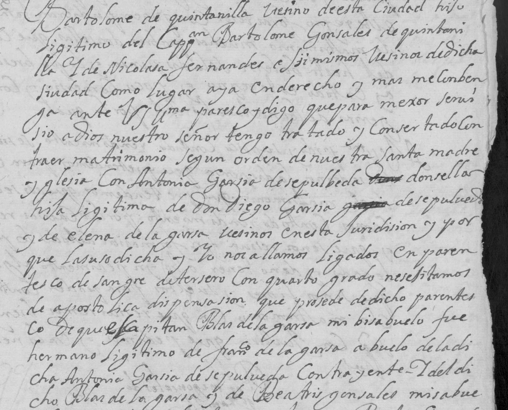
  <figcaption>Monterrey, 15 January 1693. A petition to the archdiocese of Guadalajara, with the diocesan seal in the margin. The heading reads <strong>"Monterrey y Henero 15 de 1693"</strong> and the relationship is <strong>"3.º con 4.º"</strong> — third degree with fourth. Image 346 of 1,179 in the film. <a href="documents/dispensation-1693-monterrey-page.jpg">Full page.</a></figcaption>
</figure>

<p>The tree he swore to runs: <strong>Captain Blas de la Garza and Beatriz González → their daughter Beatriz González, who married Captain Gregorio Fernández de Tijerina → their daughter Nicolasa Fernández, "mi madre."</strong></p>

<p>That's my line, stated under oath in 1693 by a man who was there <span class="badge proven">Proven</span>. It hands me a second Monterrey family — the <strong>Garzas</strong> — through Bartolomé's wife.</p>

<p>Blas de la Garza is a substantial figure. In <strong>1626</strong> he held the estancia of San Francisco — one of the seven in the whole kingdom. At a militia muster on <strong>25 March 1663</strong>, he is the first man called, and his weapons are itemised on the roll. He was among the richest men in the province. He was dead by February 1669, and his widow Beatriz was buried in May 1670.</p>

<h3>Where the Garza story stops being true</h3>

<p>Now the correction, because this is exactly the kind of thing families get wrong.</p>

<p>Almost every tree online says Blas de la Garza's father was <strong>Marcos Alonso de la Garza, from Lepe</strong> in Huelva, and treats it as established fact. I repeated it on this page for weeks.</p>

<p>Then I checked it myself, in del Hoyo's history, which indexes every named person in the colonial kingdom.</p>

<ul>
  <li><strong>"Marcos Alonso de la Garza" is not in the index at all.</strong></li>
  <li>The one man in the book connected with Lepe is somebody else entirely — a Mexico City office-broker named Baltasar Rodríguez.</li>
  <li>There is <strong>no Garza in the 1596 founding charter</strong> of Monterrey.</li>
  <li>The 17th-century chronicle of the province mentions him zero times.</li>
  <li>The Wikipedia sentence everyone is quoting has no citation on it.</li>
</ul>

<p>So: Blas de la Garza is mine <span class="badge proven">Proven</span>. His famous father from Lepe is a hypothesis somebody wrote down once and everybody copied <span class="badge lore">Family story</span>.</p>

<p>Two more inherited claims went the same way when I actually looked. Gregorio Fernández de Tijerina is described everywhere as "a Basque from Durango in Biscay" — his burial record names no origin and no parents, the surname is Castilian rather than Basque, and the "Durango" is probably the one in Mexico. And Juan Bautista Chapa, the chronicler who married into another branch, is always said to have "published his history anonymously" — he never published it at all; it was first printed in 1909, and he was identified in 1961 from his own will.</p>

<p>None of those three errors were mine originally. All three were on this page because I took somebody's word for it. That's the lesson: <strong>a claim being everywhere is not the same as a claim being checked.</strong></p>

<h3>June 1686: the French are on the coast</h3>

<p>A bit of colour that is properly sourced, and stays colour.</p>

<p>In 1685 the French explorer La Salle landed by mistake on the Texas coast and built a fort. Spain panicked — an enemy colony inside territory they claimed. Search parties went out for years.</p>

<p>On <strong>27 June 1686</strong>, a company mustered at Cadereyta to go looking. The chronicle lists the men and the supplies: forty loads of flour, hardtack, meat and chocolate, and 468 horses. Two names on the roll are <strong>Alonso García de Quintanilla</strong> and <strong>Andrés Fernández Tijerina</strong>.</p>

<p>Those are family surnames, in the right town, in the right decade. They are <em>not</em> proven to be my direct ancestors, and I'm keeping them on the page as atmosphere rather than as a rung.</p>

<hr>

<h2>Part five: down the generations, 1684 to 1813</h2>

<h3>Antonio, and the baptism that was filmed upside down</h3>

<p>Antonio was baptised in Monterrey cathedral on <strong>20 October 1684</strong>, born on 2 October. His entry names both parents outright.</p>

<figure>
  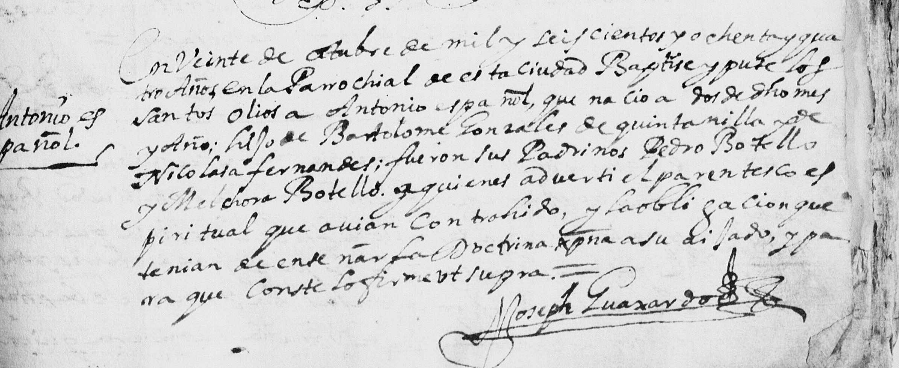
  <figcaption><strong>"Hijo de Bartolomé Gonzales de Quintanilla y de Nicolasa Fernandes."</strong> This page sat unread for years partly because the whole film reel was scanned upside down. <a href="documents/antonio-baptism-1684-page.jpg">Full page.</a></figcaption>
</figure>

<p>Antonio married three times. His first wife, <strong>Juana Garrido</strong>, is a genuine mystery: she appears in no index anywhere, and we only know she existed because his second marriage record calls him her widower. His brother married a Garrido too — <strong>two brothers, two Garrido sisters</strong>, the same pattern as the generation before.</p>

<p>His second wedding, at Cadereyta in February 1723, produced my favourite wrong answer on this whole project. Among the witnesses is "el Maestre de Campo Bartholomé González, de esta villa." I wrote that this was almost certainly his father. It wasn't. <strong>His father had been dead for nine years.</strong> That was a brother, a cousin or a nephew — and the guess got replaced by the 1684 baptism, which just says it.</p>

<p>His third wedding, July 1729, is worth reading for the sheer institutional bureaucracy of it. <strong>Seven separate impediments</strong> had to be dispensed: two of blood relationship in the fourth degree, and five of <em>affinity</em> arising from previous sexual relationships with the bride's relatives — three in the third degree, one third-with-second, one second in equality.</p>

<figure>
  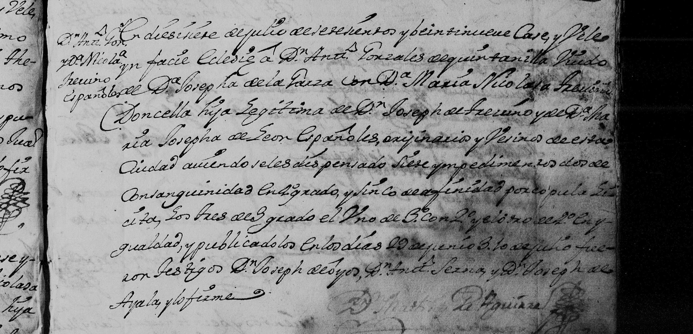
  <figcaption>Monterrey, 17 July 1729. The clause listing the seven impediments. I transcribed this wrong the first time — I wrote "third degree" where the page says <strong>"4.º grado"</strong>, and I left out the whole breakdown of the five affinity items. Corrected off the page. <a href="documents/antonio-marriage-1729-page.jpg">Full page.</a></figcaption>
</figure>

<p>In plain English: the bride and groom were third cousins along two separate lines, and the church had a written record of five previous relationships he'd had with women in her family. It was all disclosed, priced, and dispensed. Nobody pretended otherwise.</p>

<p>One more thing about Antonio. In <strong>1716</strong> the Crown decided to found a new town in the Carrizal valley, and to do it they took land off the people who held it. The petition names them: <em>"que quitaron al capitán Juan de León, Alonso Garrido y Bartolomé y Antonio de Quintanilla"</em> — which they took from Captain Juan de León, Alonso Garrido, and Bartolomé and Antonio de Quintanilla. So the family got dispossessed too. It's also worth saying who had the land before any of them: it was Tlaxcalan Indian land first.</p>

<h3>Francisco Miguel, and the record that joined the two halves</h3>

<p>For a long time my line and the colonial line were two separate chains that looked like they should join. The join was a man called "Don Miguel Quintanilla," named as a grandfather in an 1813 baptism, who <em>looked</em> like the Francisco Miguel baptised in 1731 — but on a name match, not on a record.</p>

<p>Two documents fixed that.</p>

<figure>
  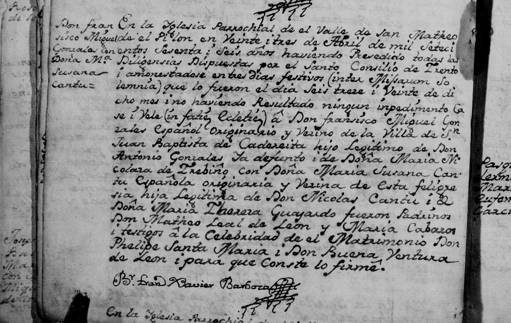
  <figcaption>San Mateo del Pilón (now Montemorelos), 23 April 1766. Francisco Miguel marries <strong>María Susana Cantú</strong>. He is <em>"originario y vezino de la Villa de San Juan Baptista de Cadereita, hijo legítimo de Don Antonio Gonzales, ya defunto, i de Doña María Nicolasa de Treviño."</em> <a href="documents/francisco-miguel-cantu-marriage-1766-page.jpg">Full page.</a></figcaption>
</figure>

<figure>
  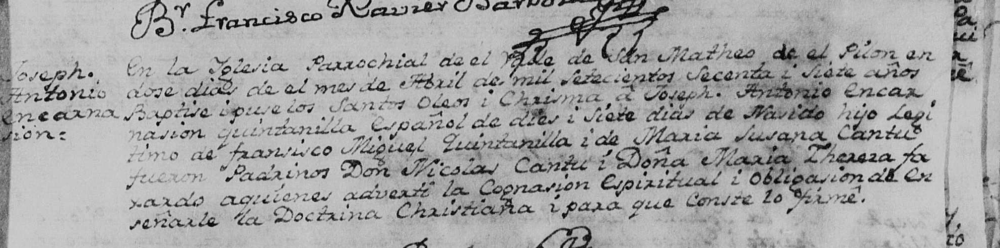
  <figcaption>The same parish, 12 April 1767, eleven and a half months later: their firstborn, <strong>José Antonio Encarnación</strong>, seventeen days old. The godparents are the bride's own parents, and the same priest signed both records. <a href="documents/jose-antonio-baptism-1767-page.jpg">Full page.</a></figcaption>
</figure>

<p>That's the join, made twice, on the page <span class="badge proven">Proven</span>.</p>

<p>Somewhere between 1767 and 1787 the family moved again, from Montemorelos to a town called <strong>China</strong>, in Nuevo León — which is where the next generation's records are.</p>

<h3>Dámaso, and an Italian in the family</h3>

<figure>
  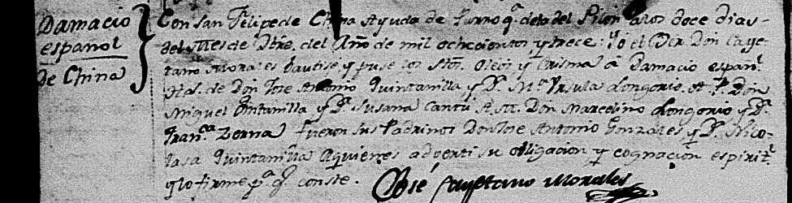
  <figcaption>China, Nuevo León, 15 December 1813: <strong>Dámaso Quintanilla</strong>, son of José Antonio, grandson of "Don Miguel Quintanilla y Doña Susana Cantú." <a href="documents/quintanilla-damaso-christening-page.jpg">Full page.</a></figcaption>
</figure>

<p>Dámaso married <strong>Felipa Garza</strong>, and her side opens a line I did not expect. It runs back through the <strong>Longoria</strong> family to <strong>Juan Bautista Chapa</strong> <span class="badge probable">Probable</span> — an Italian, born in Albisola near Genoa, who came to Mexico as a young man, changed his name from Chapapría, and wrote the 17th-century chronicle of Nuevo León that historians still use. The book I've been quoting for the 1686 muster is, quite possibly, written by an ancestor.</p>

<p>(Even here the received story needed correcting. Del Hoyo gives his birth as 1630, not 1627, and names his parents as Bartolomé Chapapría and Batestina Badí. And he never published the chronicle — it first appeared in print in 1909, and he wasn't identified as the author until 1961.)</p>

<h3>Inocencio</h3>

<p>Dámaso's son <strong>Inocencio</strong> is the last generation born in the interior. He was baptised in 1853 in the Matamoros parish — a bad film, where his mother's name is clear and his father's forename sits under an ink blot. His marriage in 1897 is much better.</p>

<figure>
  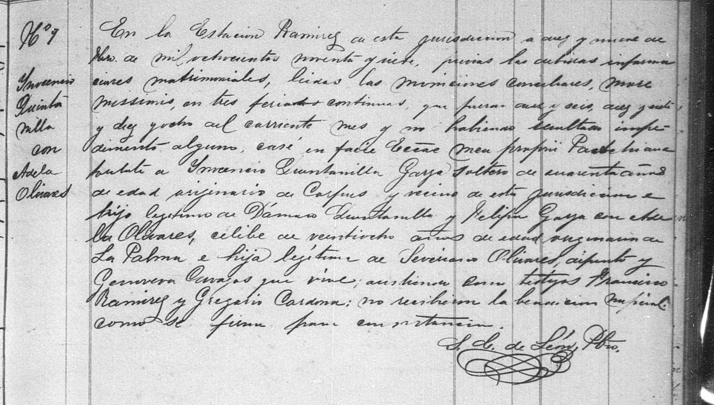
  <figcaption>Estación Ramírez, 19 February 1897: <strong>"Ynocencio Quintanilla Garza, soltero, de cuarenta años… hijo legítimo de Dámaso Quintanilla y Felipa Garza."</strong> A bachelor of forty. <a href="documents/inocencio-marriage-1897-page.jpg">Full page.</a></figcaption>
</figure>

<p>There's a trap in that record, and I fell into it. The bride in 1897 is <strong>Adela Olivares</strong> — not my great-great-grandmother. Inocencio was a widower twice over when he died. So this record proves he was Dámaso's son, but it does <em>not</em> prove he was my great-grandfather's father. That comes from his death record.</p>

<figure>
  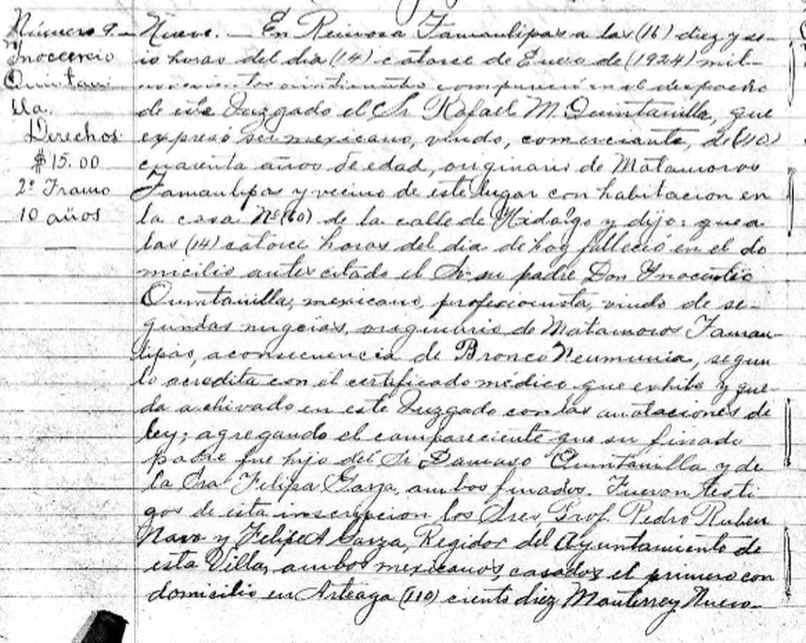
  <figcaption>Reynosa, 14 January 1924. The record that actually welds the two halves of this family together. It had been sitting in my own folder for months before anybody read it properly.</figcaption>
</figure>

<hr>

<h2>Part six: the man who went first, and the story he told</h2>

<p>Everything American in this family runs through one man, and until recently I had him completely wrong.</p>

<p>I had written that my great-grandfather <strong>Hector Sr.</strong> was born in Hidalgo, Texas, around 1890, and that his American citizenship was the hinge the whole family swung on. Neither half is true.</p>

<p>His full name was <strong>Héctor Hermenegildo Quintanilla Villanueva</strong>. His own marriage record says where he was from.</p>

<figure>
  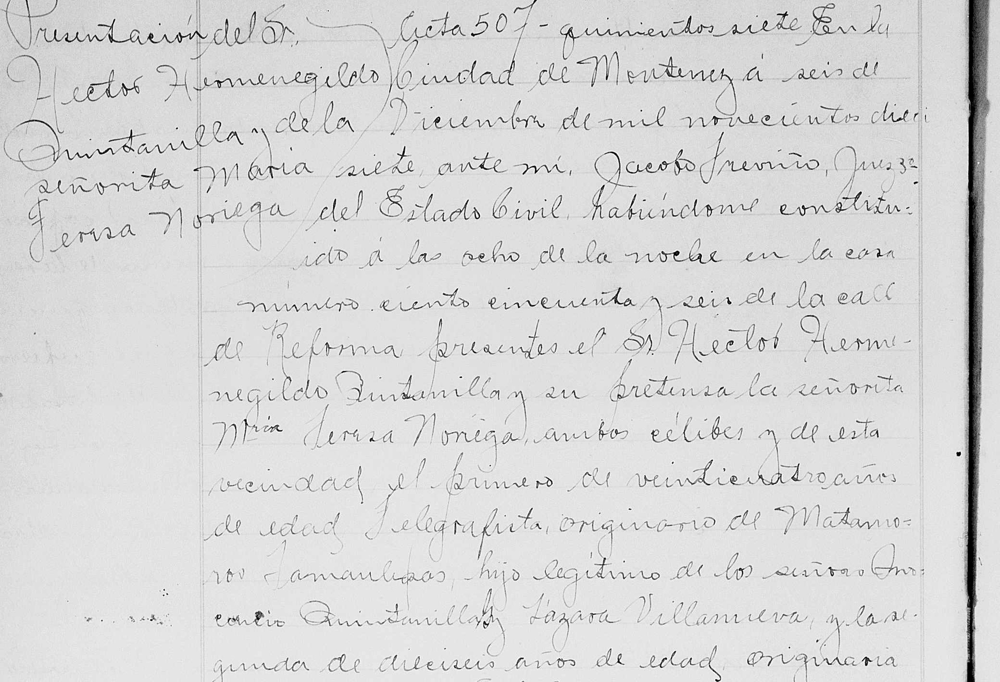
  <figcaption>Monterrey, 6 December 1917, eight o'clock at night, at a house on Calle de Reforma, in front of a civil judge. Acta 507: <strong>"…el primero de veinticuatro años de edad, telegrafista, originario de Matamoros, Tamaulipas, hijo legítimo de los señores Inocencio Quintanilla y Lázara Villanueva…"</strong> Twenty-four years old, so born about 1893. A <strong>telegraph operator</strong>. And a native of <strong>Matamoros, Mexico</strong> — not Texas. <a href="documents/hector-sr-marriage-1917-page.jpg">Full page.</a></figcaption>
</figure>

<p>The bride, <strong>María Teresa Noriega</strong>, was <strong>sixteen</strong>.</p>

<p>So where did "Hidalgo, Texas" come from? I found the answer, and it's better than I expected. It wasn't vague family memory. It was a sworn federal form.</p>

<hr>

<h2>Part seven: the other grandmother, and a second man off a boat</h2>

<p>Teresa Noriega is a quarter of this side of my family and nobody had ever looked at her. Her parents' marriage record turned up in a small silver-mining town in San Luis Potosí.</p>

<figure>
  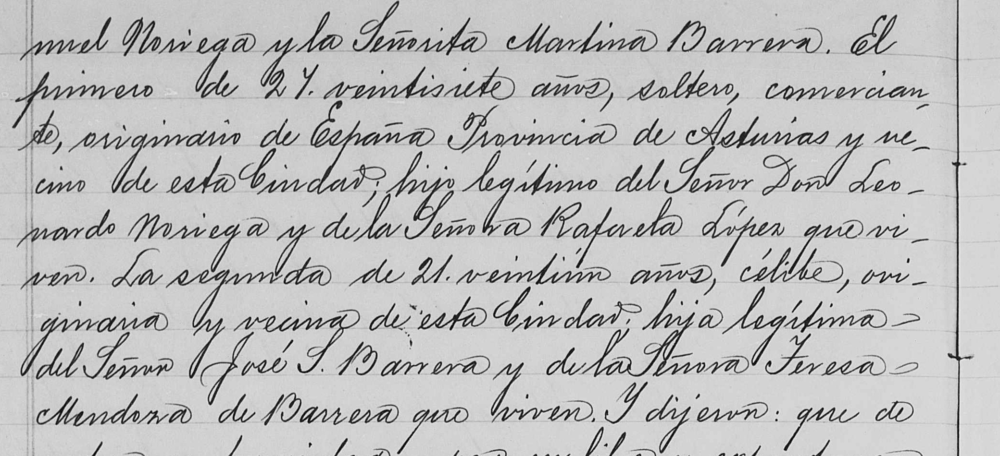
  <figcaption>Real de Catorce, 6 July 1893, acta 96. <strong>Manuel Noriega</strong>, aged 27, <em>"comerciante, originario de España Provincia de Asturias"</em> — a merchant, a native of Spain, province of Asturias — <em>"hijo legítimo de Don Leonardo Noriega y Rafaela López."</em> The bride, <strong>Martina Barrera</strong>, daughter of José S. Barrera and Teresa Mendoza. <a href="documents/noriega-barrera-marriage-1893-catorce-page2.jpg">Full page.</a></figcaption>
</figure>

<p>So there are <strong>two immigrants from Spain in this line, 266 years apart</strong>: Bartolomé González out of Andalusia, dead in 1672, and Manuel Noriega out of Asturias, marrying in a mining town in 1893. One died on charity. The other was a shopkeeper. Both of them are the reason anybody in this family is anywhere.</p>

<p>Their children came in order: Teresa about 1901 in Matehuala, Magdalena 1895, Francisca Romana 1897, Pedro 1904, José 1907 who died the next year. The family moved from Catorce down to Matehuala somewhere around 1900.</p>

<p>Manuel Noriega's own baptism, in Asturias around 1866, is the obvious next target — and FamilySearch simply doesn't hold Asturian parish records. That one needs the diocesan archive in Oviedo.</p>

<h3>Teresa, and two sisters nobody knew about</h3>

<p>Teresa died on Saturday <strong>27 August 1983</strong>. Her obituary ran the next day, and it is one of the most useful documents on this page.</p>

<figure>
  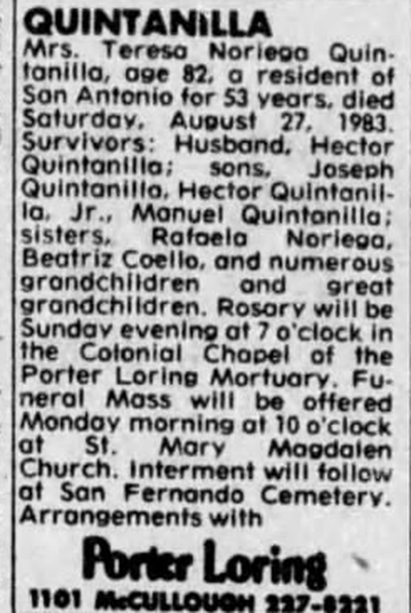
  <figcaption><em>San Antonio Express-News</em>, 28 August 1983: <strong>"Mrs. Teresa Noriega Quintanilla, age 82, a resident of San Antonio for 53 years."</strong> Survivors: husband Hector; sons Joseph, Hector Jr. and Manuel; <strong>sisters Rafaela Noriega and Beatriz Coello</strong>. Rosary at Porter Loring; funeral Mass at St. Mary Magdalen; burial at San Fernando Cemetery. <a href="documents/teresa-noriega-obituary-1983-page.jpg">Full page.</a></figcaption>
</figure>

<p>Two things in that. First, "a resident of San Antonio for 53 years" counts back to <strong>1930</strong> — which independently confirms the 1929 border crossing that the rest of this page rests on. Second: <strong>she had two sisters living in San Antonio</strong>, and this family did not know they existed. Beatriz Coello's descendants would be second cousins of my mother, and they are the best chance anyone has of finding a photograph of Hector Sr., because there isn't one in any source I've checked.</p>

<hr>

<h2>Part eight: the footbridge, 29 November 1929</h2>

<p>On <strong>29 November 1929</strong>, Teresa Quintanilla walked across the footbridge at Laredo, Texas, with four sons: Humberto, ten; Jose, eight; Hector Jr., six; Manuel, four. Hector Sr. had gone ahead. They settled at <strong>103 Marshall Street, San Antonio</strong>, and that address is on every family document for the next twenty years.</p>

<p>Years later, when each of them applied to become American, they had to write down that crossing. All four say the same thing, in the same word, on four separate government forms: <strong>on the Footbridge</strong>.</p>

<figure>
  
  <figcaption>Jose's declaration, March 1941: entered at Laredo, Texas, <strong>under the name Jose Homero Quintanilla Noriega</strong>, on 29 November 1929, <strong>"on the Footbridge."</strong> Note the maternal surname — in Mexico he was a Quintanilla Noriega. <a href="documents/jose-declaration-1941-page.jpg">Full page.</a></figcaption>
</figure>

<p>These naturalisation papers turn out to be the richest documents in the modern half of the family, because the government made everybody describe themselves.</p>

<figure>
  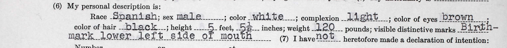
  <figcaption>Jose, aged 20, in March 1941: <strong>"Race Spanish; sex male; color white; complexion light; color of eyes brown; color of hair black; height 5 feet 5½ inches; weight 120 pounds; visible distinctive marks: Birthmark lower left side of mouth."</strong></figcaption>
</figure>

<p>Two things there. The Army classified him as "White (includes Mexican)" and this clerk wrote "Spanish" — same man, same decade, different box, because nobody had a consistent idea of what he was. And that birthmark, recorded on his face in 1941, is on the same face a German flying bomb would tear open four years later.</p>

<h3>The form that explains the family story</h3>

<p>Teresa's own petition finally explains where "Hidalgo, Texas" came from.</p>

<figure>
  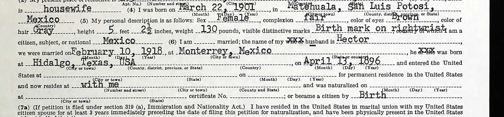
  <figcaption>Teresa's petition: born <strong>22 March 1901 in Matehuala, San Luis Potosí</strong>; housewife; fair, brown eyes, grey hair, five foot two and a half, 130 pounds; <strong>"visible distinctive marks: Birth mark on right wrist."</strong> Married <strong>10 February 1918 at Monterrey</strong>. And then: her husband Hector <strong>"was born at Hidalgo, Texas, USA, on April 13, 1896"</strong> and <strong>"became a citizen by Birth."</strong> <a href="documents/teresa-petition-page.jpg">Full page.</a></figcaption>
</figure>

<p>She filed as the wife of an American citizen. The whole petition depends on Hector having been born in Texas.</p>

<p>And his own marriage record, made in Monterrey in 1917 by him, in front of a Mexican judge, at the time, says he was born in Matamoros, Mexico, and was twenty-four.</p>

<p>Those cannot both be right. The 1917 record is closer to the event, made for no advantage, and it agrees with everything else about him. The 1896 Texas birth exists on the American paperwork and nowhere else — no birth certificate has ever been found, in Texas or in Matamoros.</p>

<p>I'm not going to call my great-grandmother a liar on a webpage. What I will say is this: in 1930s and 1940s Texas, a Mexican-born family with an American-citizen father had a very different life from one without, and a great many families in exactly this position said exactly this. It's on the 1930 census too, which is where Hector himself seems to have started it. <strong>The family story wasn't a misremembering. It was a decision.</strong> And it worked — all four sons and their mother became citizens.</p>

<p>(A small footnote: the marriage date is different too. The civil record says 6 December 1917; Teresa's petition says 10 February 1918. The likeliest explanation is dull — the civil wedding and the church wedding were two months apart, and she gave the church one.)</p>

<hr>

<h2>Part nine: four brothers and a war</h2>

<p>All four boys who crossed that footbridge served or built a life in the country they walked into. Three of them were in uniform in the Second World War.</p>

<h3>Humberto, the eldest</h3>

<p>Humberto was born 19 December 1918 and was ten years old on the bridge. He became a car salesman at Smith Motor Sales, and then something more interesting: a serious civic figure in Mexican-American San Antonio. He was in <strong>LULAC Council No. 2</strong> — the League of United Latin American Citizens, then the main civil-rights organisation for Mexican-Americans in Texas. He was a trustee of <strong>Texas Lutheran College for fifteen years</strong>. He was a precinct committeeman, sat on the Bexar County Executive Committee, and served <strong>two terms on the State Democratic Executive Committee</strong> for the 19th Senatorial District.</p>

<figure>
  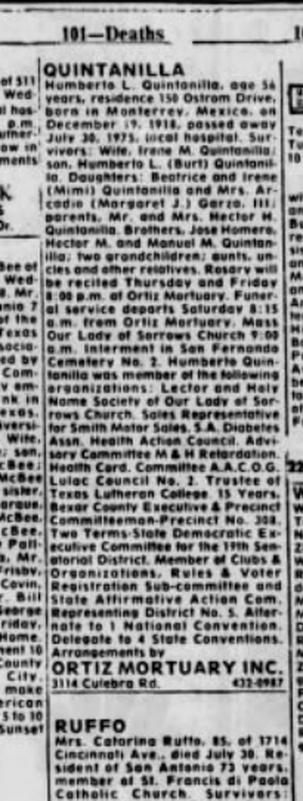
  <figcaption><em>San Antonio News</em>, 31 July 1975. He died on 30 July, aged 56. The list of survivors includes <strong>"Mr. and Mrs. Hector H. Quintanilla"</strong> — which is how we know his father was still alive that summer. <a href="documents/humberto-obituary-1975-page.jpg">Full page.</a></figcaption>
</figure>

<p>The family remembered him as county Democratic chairman. He wasn't — he was on the committee, which is a real thing and a different thing. Fixed.</p>

<h3>Jose, the medic</h3>

<p>Jose Homero Quintanilla, born 29 January 1921, enlisted on <strong>14 August 1942</strong>, serial number <strong>38143995</strong>. He was a sergeant in the Medical Department, and the Army's own paperwork tracks him from Texas to England to Normandy to the Ardennes.</p>

<p>The family always said he was wounded by a buzz bomb in Belgium in January 1945 — face and hand — patched up and sent straight back. It was the sort of thing families say. There was a San Antonio newspaper casualty list to back it, and nothing else.</p>

<p>The US Army kept a punch-card record of every hospital admission of the war. His is in it, under his serial number.</p>

<blockquote>
<p><strong>Quintanilla, Jose H</strong> — admission age 24 — Medical Dept.<br>
<strong>Admission date: Jan 1945.</strong><br>
<strong>Type of injury: "Battle casualty."</strong><br>
<strong>Diagnosis: "Wound(s), lacerated with no nerve or artery involvement; Location: Face, generally; Location: Hand, generally; CausativeAgent: <em>Robot Bomb (Buzz, V-1, V-2 bomb) Blast effects</em>."</strong><br>
<strong>Discharge: Jan 1945 — to Duty.</strong></p>
</blockquote>

<p>Face. Hand. Robot bomb, blast effects. Battle casualty. Back on duty inside the month. <strong>Every part of the family story is in that card</strong>, in the Army's own coding, written down at the time by a clerk who had never heard of him.</p>

<p>What that card could <em>not</em> do was give the day, or the place. It says January. It names no country and no town. For a long time that was the wall, and this page said so: where he was standing rested on where his unit was, which was inference, not record.</p>

<h3>11 January 1945, Liège</h3>

<p>In November 2026 Fold3 put the <strong>1945 Army morning reports</strong> online &mdash; the daily form every unit filed, indexed by service number. The National Archives' own scanning still stops dead at December 1944. His serial returns twenty-seven records. This is the fourth one.</p>

<figure>
  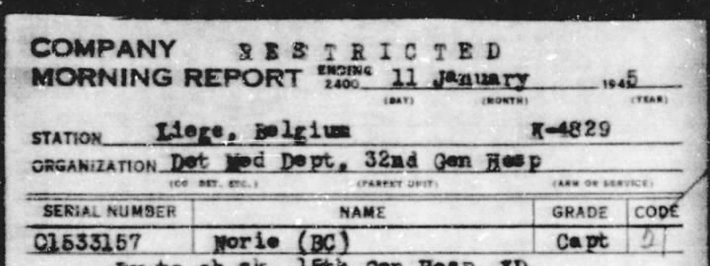
  <figcaption><strong>Company Morning Report, ending 2400, 11 January 1945. Station: Liege, Belgium. Organization: Det Med Dept, 32nd Gen Hosp.</strong> <a href="documents/jose-morning-report-1945-01-11-liege-page.jpg">Full page.</a></figcaption>
</figure>

<figure>
  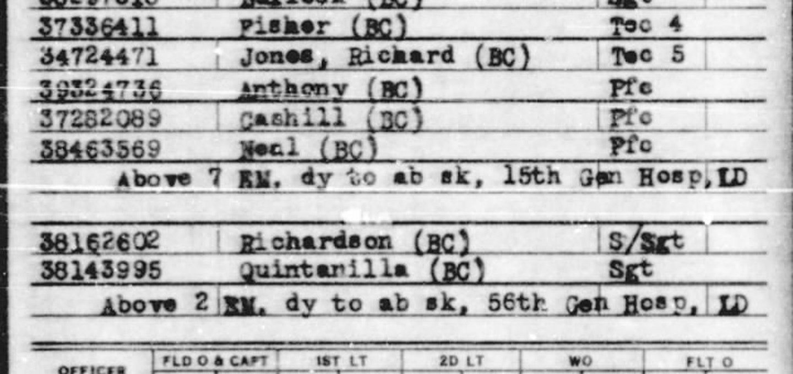
  <figcaption><strong>38143995 Quintanilla (BC) Sgt &mdash; "Above 2 EM, dy to ab sk, 56th Gen Hosp, LD."</strong> <strong>(BC)</strong> is the Army's abbreviation for <strong>battle casualty</strong>; the rest means duty to absent-sick, 56th General Hospital, line of duty.</figcaption>
</figure>

<p>That is the day. <strong>11 January 1945, in Liège.</strong> Not Antwerp, which the family said. Not Verviers, which I had worked out from his orders and put on this page as the likeliest answer. Both wrong, and wrong because they were reasoning rather than reading.</p>

<p>Now look again at the whole page, not just his line. <strong>Captain Norie (BC). Lieutenant Shapiro (BC). Dover, Bullock, Fisher, Jones, Anthony, Cashill, Neal &mdash; "Above 7 EM, dy to ab sk, 15th Gen Hosp, LD." Richardson and Quintanilla to the 56th.</strong></p>

<p><strong>Twelve people out of one detachment, in one morning, all marked battle casualty.</strong> That is not a man being unlucky on his own. That is a flying bomb landing on his unit. Liège was taking roughly ten V-1s a day that month; on 11 January alone, one hit the rue Féronstrée at half past eleven and killed thirty-three people, and another hit a school at Grivegnée in the afternoon and killed thirteen. <strong>Which one caught them, the record does not say</strong>, and I am not going to guess a street.</p>

<p>Then the hospital's own paperwork says the same thing from the other end.</p>

<figure>
  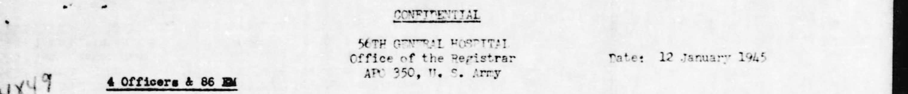
  <figcaption><strong>56th General Hospital, Office of the Registrar, APO 350. Date: 12 January 1945. 4 Officers &amp; 86 EM. Admissions &mdash; 24 hour period ending 2400 hrs, 11 Jan 1945.</strong> Ninety people came through that one hospital's doors in those twenty-four hours. <a href="documents/jose-56th-gen-hosp-admissions-1945-01-11-page.jpg">Full page.</a></figcaption>
</figure>

<figure>
  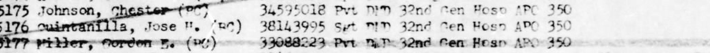
  <figcaption>Line <strong>5176: "Quintanilla, Jose H. (BC) &mdash; 38143995 Sgt DMD 32nd Gen Hosp APO 350,"</strong> between Johnson, Chester and Miller, Gordon &mdash; two more men off the same morning report.</figcaption>
</figure>

<p>Two record series, two different clerks, two different units, written a day apart. They agree.</p>

<p>And then, four days later:</p>

<figure>
  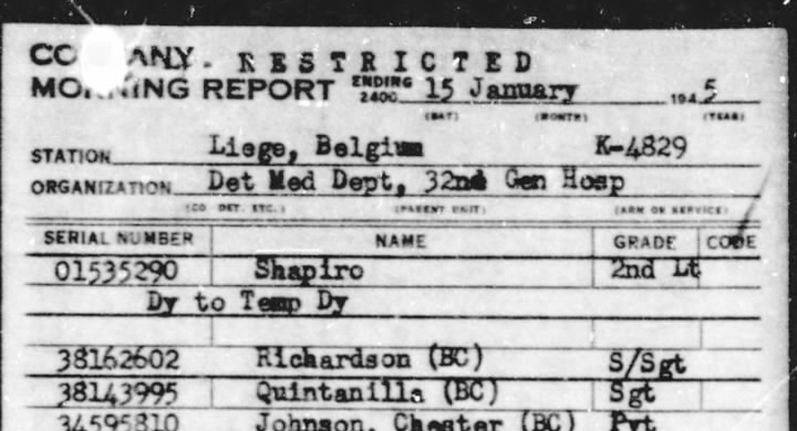
  <figcaption><strong>15 January 1945, Liege.</strong> Richardson, <strong>Quintanilla</strong>, Johnson, Miller and Roberson: <strong>"Above 5 EM, ab sk, 56th Gen Hosp, to dy."</strong> Absent sick at the 56th General &mdash; returned to duty. <a href="documents/jose-morning-report-1945-01-15-returned-page.jpg">Full page.</a></figcaption>
</figure>

<p><strong>Wounded on the 11th. Back at work on the 15th.</strong> Four days, with his face and his hand cut open by a German flying bomb, and then he went back to being a medic. He was twenty-three.</p>

<p>I want to be straight about one more thing, because it is the whole point of how this page is built. <strong>The wrong answer on this page was mine, not the family's.</strong> I had reasoned from a transfer order and a unit history to Verviers, ranked 5 January as the likeliest date at about forty percent, and written it down. The family said Antwerp. The paper says Liège, on the 11th. Nobody had to be lying for everybody to be wrong &mdash; it just needed one document that nobody had looked at, because until two weeks ago it had never been scanned.</p>

<figure>
  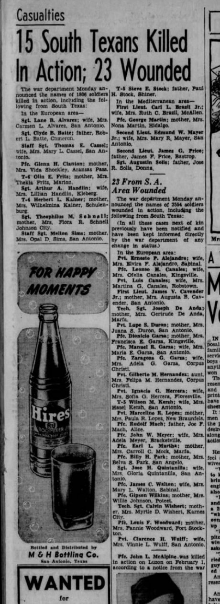
  <figcaption><em>San Antonio Light</em>, 5 March 1945: the War Department's list of wounded, with <strong>Sgt. Jose H. Quintanilla</strong> on it. For a long time this was the only thing outside family memory. <a href="documents/jose-casualty-list-1945-page.jpg">Full page.</a></figcaption>
</figure>

<p>There is a second admission card under the same serial number, and it is the funniest document in this entire project. <strong>April 1944</strong>, in England, two months before Normandy: <em>"Diagnosis: Unguis incarnatus. Treatment: Excision of nail. Injured in line of duty."</em></p>

<p>An ingrown toenail. The Army wrote it in Latin, recorded that he had got it <strong>in the line of duty</strong>, cut the nail off, and sent him back the same month.</p>

<p>I like it for two reasons. It's the only completely ordinary day of his war that survives on paper — everywhere else it's Normandy, the Ardennes, a flying bomb, and somewhere behind all that there was a twenty-three-year-old with a sore toe being a patient for once. And it's what proves the two cards are the same man: he's 23 on one and 24 on the other, Medical Department on both, and the service length on the 1944 card back-dates his enlistment to exactly August 1942.</p>

<p>After the war he joined the Foreign Service. When his mother filed her citizenship petition, his address was <strong>Santo Domingo, Dominican Republic</strong>. He died in 2016, the last of the four.</p>

<h3>Hector Jr., who ran Project Blue Book</h3>

<figure class="portrait">
  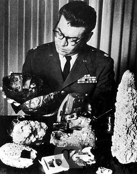
  <figcaption><strong>Hector Quintanilla Jr.</strong> — the boy who was six years old on the Laredo footbridge — as the officer in charge of the United States Air Force's investigation into unidentified flying objects.</figcaption>
</figure>

<p>Hector Jr. was born <strong>7 May 1923</strong>. He entered the Army on <strong>27 January 1943</strong>, serial 38366755, and his own naturalisation petition gives the precise dates the official records never did: he <strong>"served beyond continental United States, to wit, in S.W. Pacific Area from 3/29/44 to 12/10/45."</strong> He was in the 72nd Bomb Squadron, 13th Air Force. He was discharged 16 December 1945.</p>

<figure>
  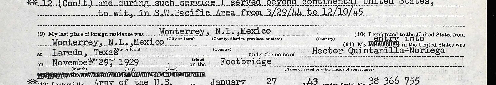
  <figcaption>His petition, sworn 21 June 1946. Southwest Pacific, 29 March 1944 to 10 December 1945. Entered the United States at Laredo, on the Footbridge, <strong>under the name Hector Quintanilla-Noriega</strong>. Filed under the wartime provision for servicemen — the form is stamped <strong>"SEC. 701 — NO FEE."</strong> <a href="documents/hector-jr-petition-1946-page.jpg">Full page.</a></figcaption>
</figure>

<p>The family said he was a bombardier. He wasn't — he was enlisted radio and radar aircrew, which he says himself in his own memoir. That correction came from the best source imaginable.</p>

<p>Because Hector Jr. <strong>wrote 127 pages about his life</strong>, and chapter one is this family's immigration story in his own words. It is the only extended first-person account anybody in this line left. The line that matters most in it is four words long: <em>"I was an immigrant."</em></p>

<p>He went to St. Mary's University on the GI Bill, took a physics degree, went back into the Air Force, and ended up in intelligence: the Security Service, then Rome Air Development Center, then the Foreign Technology Division. From <strong>August 1963 to January 1970</strong> he was <strong>Chief of Project Blue Book</strong>, the Air Force's official UFO investigation. He was decorated for it, and he published in the CIA's own in-house journal while he was doing it.</p>

<figure>
  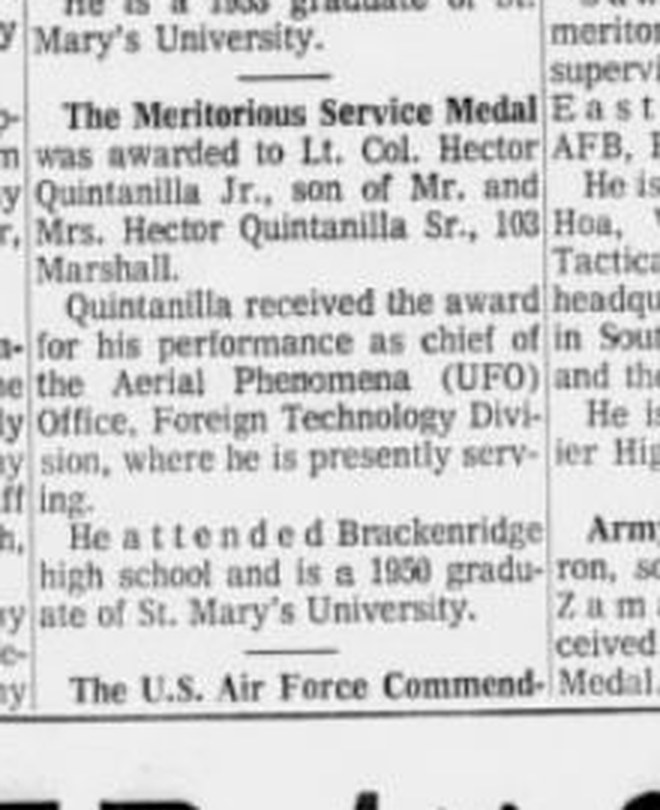
  <figcaption><em>San Antonio Light</em>, 2 July 1970 — six months after Blue Book closed: the Meritorious Service Medal for <strong>Lt. Col. Hector Quintanilla Jr., "son of Mr. and Mrs. Hector Quintanilla Sr., 103 Marshall."</strong> The paper still had him at his parents' address. <a href="documents/hector-jr-medal-1970-page.jpg">Full page.</a></figcaption>
</figure>

<p>He was a <strong>Lieutenant Colonel</strong>, not a full colonel — another small family upgrade that the record doesn't support. He died on 18 May 1998, aged 75, and is buried at Fort Sam Houston National Cemetery.</p>

<figure>
  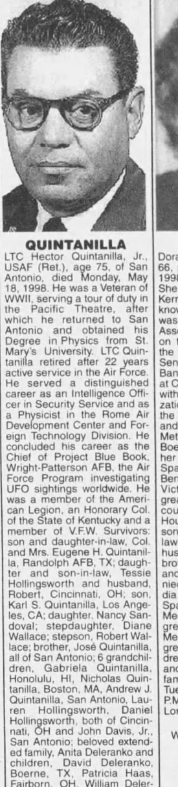
  <figcaption><em>San Antonio Express-News</em>, 19 May 1998. It names his son <strong>Colonel Eugene H. Quintanilla, USAF</strong>, then at Randolph Air Force Base — a full colonel in the next generation — and six grandchildren by name and city. <a href="documents/hector-jr-obituary-1998-page.jpg">Full page.</a></figcaption>
</figure>

<h3>Manuel — my grandfather</h3>

<figure class="portrait">
  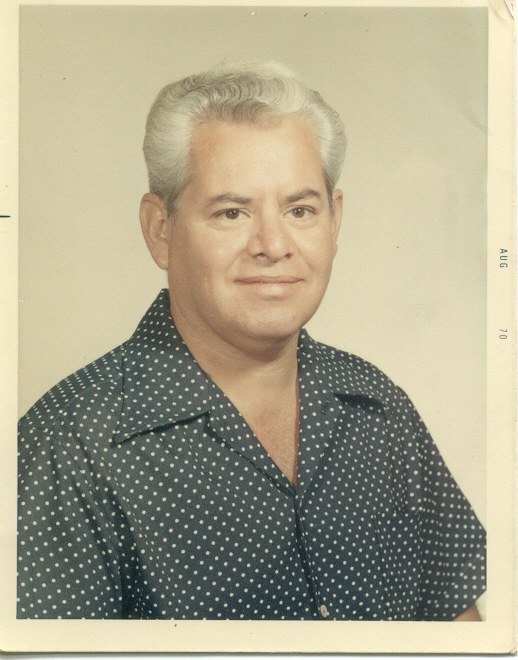
  <figcaption><strong>Manuel Quintanilla</strong>, August 1970. He was four years old on the footbridge. This is one of only two photographs of any ancestor in this line that anybody has found.</figcaption>
</figure>

<p>Manuel was born <strong>28 May 1925</strong> in Monterrey. His naturalisation petition, sworn in February 1949, describes him at 23: <strong>five foot six, 158 pounds, brown eyes, black hair, "two moles left jaw," occupation Optician.</strong></p>

<p>The same form turned up something nobody in the family knew. He served in the Army from <strong>2 April 1946 to 4 June 1947</strong>, serial <strong>38765566</strong>. And in March 1947, he filed his first citizenship petition in a US District Court in <strong>Fairbanks, Alaska</strong> — which was dismissed for lack of prosecution when the Army moved him on.</p>

<figure>
  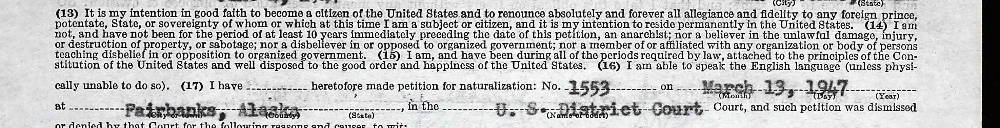
  <figcaption>Petition No. 1553, 13 March 1947, at <strong>Fairbanks, Alaska</strong> — dismissed. He filed again in San Antonio two years later and got it. <a href="documents/manuel-petition-1949-page.jpg">Full page.</a></figcaption>
</figure>

<p>A boy carried across a Texas footbridge at four, in an Army uniform in Alaska at twenty-one, filing for citizenship in a courthouse two and a half thousand miles from his mother.</p>

<p>Back in San Antonio he got a GED and then talked his way into <strong>Texas State Optical</strong> by offering to work for free until they thought he was worth paying. He stayed thirty-five years, took over the franchise at 1710 Fredericksburg Road in 1980, and opened his own shop, <strong>Quintanilla Optical</strong>, in 1989.</p>

<p>He was also <strong>Commander of the Bexar County Sheriff's Reserves</strong>, and won the Hidalgo Award in both 1991 and 1992. Everybody called him <strong>Mr. Q</strong>. Five of his children went into law enforcement, including my mother, who was a reserve constable.</p>

<figure>
  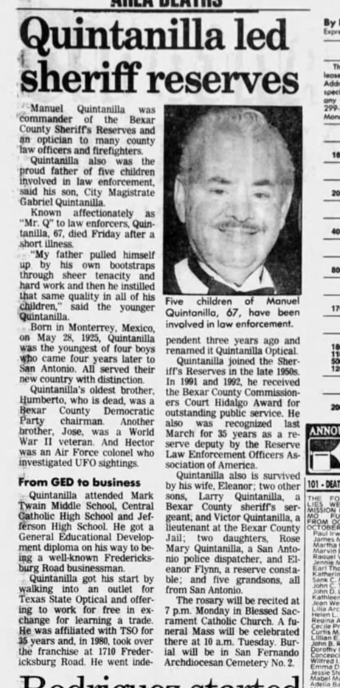
  <figcaption><em>San Antonio Express-News</em>, 25 October 1992: <strong>"Quintanilla led sheriff reserves."</strong> He died on 23 October 1992 — not 1993, which is the date the family had. <a href="documents/manuel-obituary-1992-page.jpg">Full page.</a></figcaption>
</figure>

<figure class="portrait">
  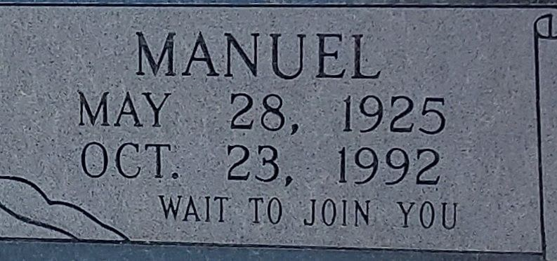
  <figcaption>San Fernando Cemetery No. 2, San Antonio — the same cemetery as his mother.</figcaption>
</figure>

<hr>

<h2>Part ten: how it ended for the first generation</h2>

<p>Teresa died in August 1983, aged 82, with an obituary that named her sons and her sisters and the parish she belonged to.</p>

<p>Hector Sr. outlived her by two years and got nothing like that. I searched every San Antonio newspaper for the eleven days after his death and found no obituary at all. What he got was one line, buried in a column of vital statistics two weeks later.</p>

<figure>
  
  <figcaption><em>San Antonio Light</em>, 8 October 1985, page 16, under DEATHS: <strong>"Hector Quintanilla, 95, 9-25."</strong> The date is exactly right. The age would put his birth around 1890, which is the oldest of the three or four birth years his own paperwork gives. <a href="documents/hector-sr-death-notice-1985-page.jpg">Full page.</a></figcaption>
</figure>

<p>The man the whole American side of this family came from — who went ahead alone, sent for his wife and four sons, and whose claimed Texas birth got all five of them citizenship — is on the public record as five words and two numbers. There is no photograph of him anywhere. That's the single biggest hole on this page.</p>

<hr>

<h2>Where the family's mistakes came from</h2>

<p>Worth pulling together, because the pattern is the same every time.</p>

<ul>
  <li><strong>Hector Sr. was born in Texas.</strong> He wasn't — Matamoros, Mexico. But this wasn't a faulty memory. It was on the 1930 census and sworn on a federal naturalisation petition, and it is how his wife became a citizen.</li>
  <li><strong>Hector Jr. was a bombardier and a colonel.</strong> Enlisted radio/radar aircrew, and a lieutenant colonel. His own memoir says so.</li>
  <li><strong>Humberto was county Democratic chairman.</strong> He was on the executive committee. Real, and not the same.</li>
  <li><strong>Manuel died in 1993.</strong> 23 October 1992.</li>
  <li><strong>Marcos Alonso de la Garza of Lepe.</strong> Not in the standard history's index at all. Copied off uncited web pages for decades, including by me.</li>
  <li><strong>The 1723 witness was Antonio's father.</strong> My own guess, clearly labelled as a guess, and wrong — the man had been dead nine years.</li>
  <li><strong>"That record is download-restricted."</strong> Two of the most important records on this page were written off for months on that basis. Both downloaded on the first click when I tried again. A server being unavailable once is not a permanent property of the document.</li>
</ul>

<p>Every single one of these came from repeating something instead of checking it. Including mine.</p>

<hr>

<h2>The paper trail</h2>
<ul class="docs">
  <li><a href="https://aad.archives.gov/aad/record-detail.jsp?dt=893&amp;rid=7148086">Jose's enlistment record, National Archives</a><span class="doc-what">Drafted 14 Aug 1942, Ft. Sam Houston. Born Mexico 1921, bank clerk, one year of college, "not yet a citizen."</span></li>
  <li><a href="https://catalog.archives.gov/id/457117177?q=38143995">Morning reports, 32nd General Hospital, England 1943</a><span class="doc-what">Sergeant Quintanilla in the flesh, sick call and furloughs at Fairford Park. Free at the National Archives, searchable by his serial number.</span></li>
  <li><a href="https://catalog.archives.gov/id/567397813?q=38143995">Morning report, Normandy, August 1944</a><span class="doc-what">The detachment two miles west of Bolleville, France. His Normandy campaign star, on paper.</span></li>
  <li><a href="https://catalog.archives.gov/id/578711433?q=38143995">Special orders, December 1944, Belgium</a><span class="doc-what">"Sgt Jose Quintanilla, 38143995" detached to the 493rd Medical Collecting Company, then the 134th Medical Group at Verviers. This puts him under the buzz bombs.</span></li>
  <li><a href="https://www.fold3.com/record/701016629">WWII hospital admission card (Fold3, login needed)</a><span class="doc-what">The V-1 wound card quoted above. Fourth independent source for the family story.</span></li>
  <li><a href="https://achh.army.mil/history/book-wwii-134thmedgp-134medgp1945/">134th Medical Group official 1945 report</a><span class="doc-what">HQ Verviers, "V-bombs and aerial bombardment... minor [casualties] from flying glass." His unit, his month, his wound.</span></li>
  <li><a href="documents/jose-casualty-list-1945-page.jpg">San Antonio Light, 5 March 1945, page 5</a><span class="doc-what">The War Department wounded list, European area: "Sgt. Jose H. Quintanilla; wife, Mrs. Gloria Quintanilla, San Antonio." Fifth source, and the only public one. Newspapers.com image 1259353335.</span></li>
  <li><a href="https://medicine.iu.edu/magazine/answering-the-call">The 32nd General Hospital's story, Indiana University</a><span class="doc-what">His parent unit from England to Aachen. IU's archive has the unit's scrapbooks and photos; he may be in them.</span></li>
  <li><a href="https://ufologie.patrickgross.org/doc/quintanilla.pdf">Hector Quintanilla Jr., <em>UFOs: An Air Force Dilemma</em> (1975, unpublished)</a><span class="doc-what">127 pages in his own unedited words. Chapter one is the family's immigration, the dirt floor, the paper route, the draft notice, the citizenship chase. Published online by the National Institute for Discovery Science; copy saved in documents/.</span></li>
  <li><a href="https://www.cia.gov/resources/csi/static/Investigation-of-UFOs.pdf">"The Investigation of UFO's," <em>Studies in Intelligence</em>, Fall 1966</a><span class="doc-what">My great-uncle, writing in the CIA's own in-house journal. Declassified 1993.</span></li>
  <li><a href="documents/hector-jr-medal-1970-page.jpg">San Antonio Light, 2 July 1970, page 22</a><span class="doc-what">Meritorious Service Medal for running Blue Book; confirms Brackenridge High, St. Mary's 1950, and his parents at 103 Marshall. Newspapers.com image 1261905195.</span></li>
  <li><a href="documents/humberto-obituary-1975-page.jpg">San Antonio News, 31 July 1975, page 39</a><span class="doc-what">Humberto's obituary: birth 19 Dec 1918 Monterrey, death 30 Jul 1975, wife Irene, four children, all three brothers, parents still living, and every office he held. Newspapers.com image 1267827302.</span></li>
  <li><a href="documents/humberto-sdec-1973-page.jpg">Corpus Christi Times, 18 February 1973, page 25</a><span class="doc-what">"Texas Demo panels named to work for party unification" — Humberto on the State Democratic Executive Committee's subcommittees, with Eddie Bernice Johnson. Newspapers.com image 759266863.</span></li>
  <li><a href="documents/manuel-obituary-1992-page.jpg">San Antonio Express-News, 25 October 1992, page 28</a><span class="doc-what">"Quintanilla led sheriff reserves" — Manuel's obituary with photograph: commander of the Sheriff's Reserves, the TSO story, the Hidalgo Awards, and five children in law enforcement. Also the origin of the family's "colonel" and "chairman" errors. Newspapers.com image 1279299342.</span></li>
  <li><a href="https://www.findagrave.com/memorial/61284100/manuel-quintanilla">Manuel Quintanilla, San Fernando Cemetery #2</a><span class="doc-what">Memorial 61284100: headstone (28 May 1925 – 23 Oct 1992, "Wait to join you"), the 1970 portrait, and links to his parents and all three brothers.</span></li>
  <li><a href="http://clioregio.blogspot.com/2009/08/carta-de-fundacion-de-la-ciudad-de.html">The 1596 founding charter of Monterrey</a><span class="doc-what">Lucas García among the twelve founders, in the founding document itself.</span></li>
  <li><a href="https://groups.google.com/g/genealogia-mexico/c/aQ8YBR9tG1Q">The founder's ten children, from Cavazos Garza</a><span class="doc-what">Ana, both name forms, married to Bartolomé González. The link that makes us founder stock.</span></li>
  <li><a href="documents/quintanilla-hector-marriage-1917.jpg">Hector Quintanilla's marriage register, Monterrey, 1917</a><span class="doc-what">My great-grandfather's civil marriage; names his father Inocencio Quintanilla and his wife Teresa Noriega. The most recent weld, image pulled.</span></li>
  <li><a href="documents/quintanilla-inocencio-marriage-1897.jpg">Inocencio Quintanilla's marriage register, Matamoros, 1897</a><span class="doc-what">Names his father Dámaso Quintanilla, in the Nuestra Señora del Refugio parish book. The middle weld, image pulled.</span></li>
  <li><a href="documents/hector-sr-marriage-1917-page.jpg">Hector Sr.'s marriage record, Monterrey, 6 Dec 1917 (Acta 507)</a><span class="doc-what">"Veinticuatro años de edad, telegrafista, originario de Matamoros, Tamaulipas." His age, his trade, his birthplace and his parents, in his own marriage entry. This is what corrects the Texas story.</span></li>
  <li><a href="documents/inocencio-death-1924-entry.jpg">Inocencio Quintanilla's death, Reynosa, 14 Jan 1924</a><span class="doc-what">Reported by his son Rafael M. Quintanilla; "viudo de segundas nupcias," son of Dámaso Quintanilla and Felipa Garza. This, not the 1897 marriage, is what welds Inocencio to Dámaso.</span></li>
  <li><a href="documents/quintanilla-damaso-christening-full.jpg">Dámaso Quintanilla's baptism, China, Nuevo León, 1813</a><span class="doc-what">Names his parents José Antonio Encarnación Quintanilla and María Úrsula Longoria, plus all four grandparents. The weld to the colonial line, read on the page.</span></li>
  <li><a href="https://ancestors.familysearch.org/en/LZF3-NW4/x">Francisco Miguel Quintanilla Treviño, 1731</a><span class="doc-what">FamilySearch, 47 attached register entries: christened Monterrey 1731, married Susana Cantú at Montemorelos 1766, father of José Antonio. This is the compiled tree's identification of the Miguel at my proven floor with the Francisco Miguel of 1731 — the join I have not yet read on a page.</span></li>
  <li><a href="https://ancestors.familysearch.org/en/LRBT-2FQ/x">Antonio González de Quintanilla, 1684–1761</a><span class="doc-what">Born Monterrey, died and buried at Cadereyta; married Nicolasa Treviño Leal 1729. His father is Alférez Real Bartolomé (<a href="https://ancestors.familysearch.org/en/LJGL-7TL/x">LJGL-7TL</a>), married 1672, whose mother is Ana María García de Quintanilla (<a href="https://ancestors.familysearch.org/en/LDK5-9RC/x">LDK5-9RC</a>), 1620–1684, the founder's daughter.</span></li>
  <li><a href="https://www.tgsaustin.org/htms/Juan%20Bautista%20Chapa/Descendants/index.htm">Descendants of Juan Bautista Chapa, TGSA</a><span class="doc-what">The published Longoria descendancy: Chapa → Nicolás → Clara María Chapa × Juan Diego Longoria → José Matías → José Marcelino × Francisca Serna → María Úrsula × José Antonio Quintanilla. Dámaso's mother's line, to Italy.</span></li>
  <li><a href="https://www.tshaonline.org/handbook/entries/chapa-juan-bautista">Juan Bautista Chapa, Handbook of Texas</a><span class="doc-what">Who he was: the anonymous historian of Nuevo León, born Schiapapria at Albisola, Italy, 1627; unmasked by Cavazos Garza in 1961.</span></li>
  <li><a href="https://en.wikipedia.org/wiki/Diego_de_Montemayor">Diego de Montemayor, founder of Monterrey</a><span class="doc-what">Born Málaga ~1528, sailed 1548, founded the city 1596, killed his wife 1581. Lucas García's grandfather through María Inés Rodríguez. Alcalde list on the companion Wikipedia page puts Lucas García and Diego Rodríguez in office eight times, Bartolomé González in 1648.</span></li>
  <li><a href="https://www.wearecousins.info/2024/09/diego-de-montemayors-1548-passage-to-new-spain/">Montemayor's 1548 passenger-list entry</a><span class="doc-what">Catálogo de Pasajeros a Indias, vol. III p. 109, 17 December 1548, Seville. The oldest document in this tree.</span></li>
  <li><a href="https://es.wikipedia.org/wiki/Marcos_Alonso_de_la_Garza_y_del_Arc%C3%B3n">Marcos Alonso de la Garza y del Arcón</a><span class="doc-what">Of Lepe, Huelva, ~1551–1634; came to Monterrey 1596; father of Blas de la Garza Falcón and Alonso de Treviño, both my ancestors; married Juana de Treviño y Quintanilla, sister of Juliana Farías's mother.</span></li>
  <li><a href="https://ancestors.familysearch.org/en/LTDC-KTM/x">General Juan de Olivares González, 1605–1669</a><span class="doc-what">Bartolomé's brother; father of Chapa's wife Beatriz. The join between the two lines on this page. His father Juan Diego Olivares (<a href="https://ancestors.familysearch.org/en/P6NW-5TH/x">P6NW-5TH</a>), b. Morón 1558, carries Spanish parish-register sources.</span></li>
  <li><a href="https://ancestors.familysearch.org/en/LV9J-VV2/x">Alonso de la Garza de Treviño, 1594–1654</a><span class="doc-what">Married Anastacia González-Hidalgo Navarro; their daughter Teresa is the Cantú ancestor and their son Nicolás Ildefonso the Treviño ancestor. Blas de la Garza Falcón (<a href="https://ancestors.familysearch.org/en/L5JN-FZY/x">L5JN-FZY</a>) is his brother.</span></li>
  <li><a href="https://www.familysearch.org/ark:/61903/3:1:9Q97-YS2S-9Z1">Bartolomé González's burial, Monterrey cathedral, 2 Feb 1672</a><span class="doc-what">"Natural de Morón… casado con Ana de Quintanilla." Read on the page. The top of the line, proven.</span></li>
  <li><a href="https://www.familysearch.org/ark:/61903/3:1:9Q97-YS24-5T">Bartolomé de Quintanilla × Nicolasa Fernández de la Garza, marriage, 20 Dec 1672</a><span class="doc-what">Fourth-degree consanguinity dispensation; witnesses Lucas García and Nicolás de Quintanilla. Read on the page.</span></li>
  <li><a href="https://www.familysearch.org/ark:/61903/3:1:9Q97-YS2S-9FP">Ana de Quintanilla's burial, Monterrey cathedral, 8 Jul 1684</a><span class="doc-what">"Viuda que fue de Bartolomé González"; will before Capt. Gregorio Fernández; executor her son Joseph González de Quintanilla. Read on the page.</span></li>
  <li><a href="documents/francisco-miguel-baptism-1731-page.jpg">Francisco Miguel's baptism, Monterrey cathedral, 14 Oct 1731</a><span class="doc-what">"Hijo legítimo de Antonio de Quintanilla y de María Nicolasa de Treviño." Read on the page.</span></li>
  <li><a href="documents/francisco-miguel-cantu-marriage-1766-page.jpg">Francisco Miguel × María Susana Cantú, marriage, San Mateo del Pilón (Montemorelos), 23 Apr 1766</a><span class="doc-what">The record that joined my chain to the colonial one. Names him "originario y vezino de Cadereita, hijo legítimo de Don Antonio Gonzales, ya defunto, i de Doña María Nicolasa de Treviño," and his bride as daughter of Don Nicolás Cantú and Doña María Theresa Guajardo. Read on the page. FS ark 9Q97-YSGH-3FR, image 295 of 649.</span></li>
  <li><a href="documents/noriega-barrera-marriage-1893-catorce-page2.jpg">Manuel Noriega × Martina Barrera, civil marriage, Real de Catorce, 6 Jul 1893</a><span class="doc-what">Acta 96. Names him "comerciante, originario de España Provincia de Asturias… hijo legítimo del Señor Don Leonardo Noriega y de la Señora Rafaela López," and her as daughter of José S. Barrera and Teresa Mendoza. The record that opened a second immigrant line, and my great-grandmother Teresa Noriega's parents. Read on the page. FS ark 3:1:3QS7-L9V1-K36L (and continuation …-K3XC).</span></li>
  <li><a href="documents/dispensation-1693-monterrey-page.jpg">Marriage dispensation petition, Monterrey, 15 Jan 1693</a><span class="doc-what">Arquidiócesis de Guadalajara, dispensas matrimoniales; FS film 103042103, ark 3:1:3Q9M-CSXG-DW7X-R, <strong>image 346 of 1,179</strong>. Bartolomé de Quintanilla, son of Capt. Bartolomé González de Quintanilla and Nicolasa Fernández, petitions to marry a third-with-fourth-degree cousin and sets out four generations to prove it: Blas de la Garza × Beatriz González → Beatriz González × Capt. Gregorio Fernández → "la dicha Nicolasa Fernandes, mi madre." Read on the page.</span></li>
  <li><a href="documents/Cavazos-Garza_Protocolos-Archivo-Municipal-Monterrey_1700-1725_UANL-1973.pdf">Will of Capt. Bartolomé González de Quintanilla, Monterrey, 14 Oct 1712</a><span class="doc-what">Archivo Municipal de Monterrey, Protocolos vol. IX, fol. 400, no. 145. "Hijo legítimo del capitán Bartolomé González y de doña Ana de Quintanilla, difuntos." Names his wife Nicolasa Fernández and his sons Bartolomé, Francisco and Antonio, "viudo el último." The record that closed the top of the line. Read in Israel Cavazos Garza, <em>Catálogo y síntesis de los protocolos del Archivo Municipal de Monterrey, 1700-1725</em> (UANL, 1973), entry 1272 — full PDF saved here, openly licensed by UANL.</span></li>
  <li><a href="documents/Nicolas-Quintanilla-will-1689_UTSA-Residents-of-Texas-v3-p104.pdf">Will of Nicolás Quintanilla, his brother, Monterrey, 13 Jan 1689</a><span class="doc-what">Archivo Municipal de Monterrey, Protocolos vol. IV, fol. 110 v., no. 48; Cavazos Garza cédula 348. "Legitimate son of Bartolome Gonzalez and Ana de Quintanilla, both deceased"; asks to be buried where his mother was. A second, independent statement of the same parents — and it identifies the "Nicolás de Quintanilla" who witnessed the 1672 wedding. Read in the English translation published in <em>Residents of Texas, 1782-1836</em>, vol. 3 p.104 (UTSA Libraries Special Collections).</span></li>
  <li><a href="documents/Cavazos-Garza_Protocolos-Archivo-Municipal-Monterrey_1700-1725_UANL-1973.pdf">Will of Doña Nicolasa Fernández de Tijerina, his widow, Monterrey, 22 Oct 1725</a><span class="doc-what">Same series, Protocolos vol. XI, fol. 324, no. 129; catalogue entry 1631. "Hija legítima de Gregorio Fernández de Tijerina y de doña Beatriz González." Lists the same seven children and makes Antonio her executor.</span></li>
  <li><a href="documents/jose-antonio-baptism-1767-page.jpg">José Antonio Encarnación's baptism, San Mateo del Pilón, 12 Apr 1767</a><span class="doc-what">"Hijo legítimo de Fransisco Miguel Quintanilla i de María Susana Cantú." Born 26 Mar 1767. Godparents Don Nicolás Cantú and Doña María Theresa Guajardo — the mother's own parents. Turns the Miguel / Francisco Miguel join from a name-match into a register entry. Read on the page. FS ark 9Q97-YSG9-2PW, image 240 of 381.</span></li>
  <li><a href="documents/antonio-baptism-1684-page.jpg">Antonio's baptism, Monterrey cathedral, 20 Oct 1684</a><span class="doc-what">"Hijo de Bartolomé Gonzales de Quintanilla y de Nicolasa Fernandes." Born 2 Oct 1684. The record that closed the top gap outright, after three of Antonio's own weddings failed to name his parents. Filmed upside down. Read on the page. FS ark 9Q97-YS29-358, image 81 of 551, folio 36.</span></li>
  <li><a href="documents/antonio-marriage-1729-page.jpg">Antonio × María Nicolasa Treviño, marriage, 17 July 1729</a><span class="doc-what">Seven impediments dispensed, two of consanguinity and five of affinity "por cópula ilícita"; he a widower of Josefa de la Garza, she daughter of Joseph de Treviño and María Josepha de León. Read on the page. Does <em>not</em> name his parents.</span></li>
  <li><a href="documents/antonio-marriage-1723-continuation-page.jpg">Antonio × Josefa de la Garza, marriage, Cadereyta, Feb 1723 (entry 105)</a><span class="doc-what">Indexed only as "Capitán Antonio González," which is why nobody found it. Names him a widower of Juana Garrido — an unknown first wife — and lists "el Maestre de Campo Bartholomé González, de esta villa" among the witnesses. Read on the page.</span></li>
  
</ul>

<h2>Still hunting</h2>

<p>In rough order of how much they would change the story:</p>

<ul>
  <li><strong>Page 92</strong> of Cavazos Garza's 1599–1700 volume — almost certainly <strong>Ana de Quintanilla's will</strong>, and the one document that decides whether the founders of Monterrey are actually ours. Print only; four American university libraries have it. This is a photocopy request, not an expedition.</li>
  <li><strong>The 138 missing pages.</strong> The scan of the 1700–1725 catalogue I have been working from is missing 138 consecutive entries, roughly <strong>1702 to 1706</strong> — exactly the five-year hole in Bartolomé's record, and where Antonio's first marriage contract with Juana Garrido would sit.</li>
  <li><strong>The 1672 marriage dispensation file.</strong> A fourth-degree cousin dispensation had to trace both parties back to the shared ancestor to prove the degree — so it had to name Ana's parents. Not found yet by name search; the next approach is browsing the Guadalajara volumes around 1672 page by page.</li>
  <li><strong>Jose's full personnel file</strong> from St. Louis. The day and the place are now answered &mdash; 11 January 1945, Li&egrave;ge &mdash; so what is left is the <strong>hour and the street</strong>, which only the Purple Heart order is likely to carry. Also worth chasing: the <strong>duplicate</strong> of his 1941 declaration of intention, which is stamped &ldquo;do not attach photograph to this copy&rdquo; &mdash; meaning the duplicate has <strong>a photograph of him at twenty</strong> on it.</li>
  <li><strong>Manuel Noriega's baptism in Asturias</strong>, around 1866. FamilySearch doesn't hold Asturian parish records; this needs the diocesan archive in Oviedo.</li>
  <li><strong>Beatriz Coello and Rafaela Noriega.</strong> Teresa's sisters, alive in San Antonio in 1983 and unknown to this family until her obituary turned up. Trace them forward. Their descendants are the best chance anyone has of a <strong>photograph of Hector Sr.</strong></li>
  <li><strong>Three 1711 lawsuits over the ownership of Indians</strong>, in the Monterrey civil records — one of them against Bartolomé himself, the year before he bought José and Isabel.</li>
  <li><strong>Death certificates and graves</strong> for Teresa (1983) and Hector Sr. (1985), and the Porter Loring funeral files that cover three generations of this family.</li>
</ul>

<p>If you're family and you have photographs, letters or corrections — especially photographs — I want them.</p>

<div class="footer"><p><a href="index.html">Back to all four lines</a></p></div>
</main>
